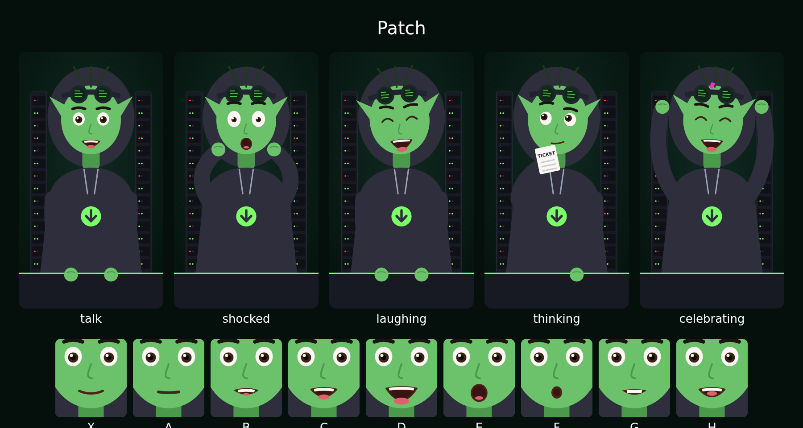
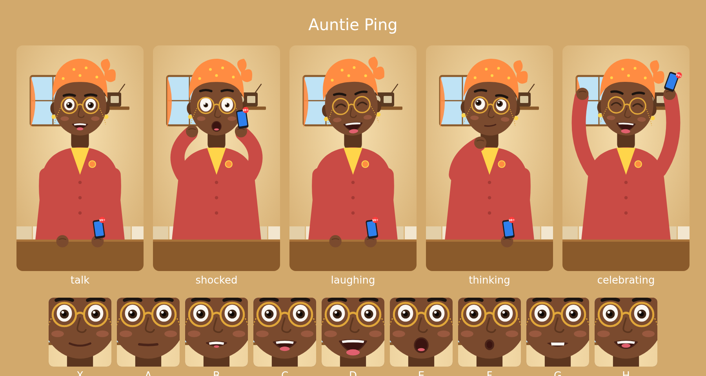
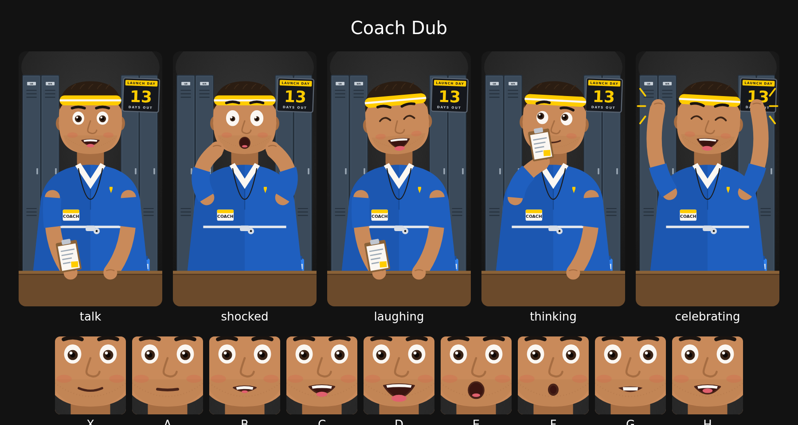

Character candidates
Same rig, same lip-sync, three personalities. Each clip is the candidate's own voice reading its opener, one hook and its sign-off. Details in docs/CHARACTER-CANDIDATES.md. Reply with A, B or C.
A. Patch
the patch-notes gremlin · deadpan- Every event is a patch note with a severity
- Works on boring topics
- Opener: "Patch notes incoming."

B. Auntie Ping
the group-chat auntie · warm gossip- Corporate news as neighbourhood drama
- Nobody else in GTA content sounds like her
- Opener: "Come, come, sit."

C. Coach Dub
the launch-day coach · loud and sincere- Countdown, whistle, locker-room speeches
- Easy running gags
- Opener: "Huddle up!"
